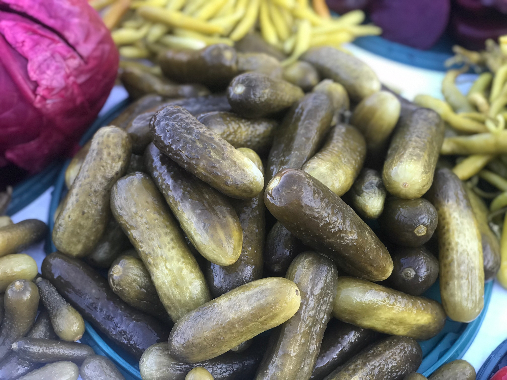
Salatalıkların sirke, su, tuz ve bazen baharatlar kullanılarak fermente edilmesiyle yapılan bir tür turşu çeşididir. Salatalık turşusu, taze salatalıkların lezzetini ve dokusunu korurken, fermente işlemi onlara ek bir tat ve ferahlatıcı bir hafiflik katmaktadır.
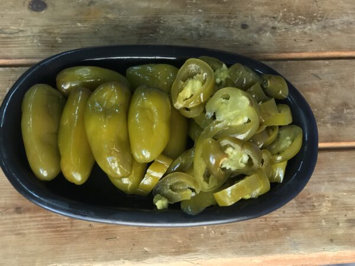
Acı ve baharatlı bir tat profiline sahip olan jalapeno biberlerinin sirke, tuz, su ve baharatlarla fermente edilmesiyle yapılan bir turşu türüdür. Jalapeno biberleri, Meksika mutfağında ve dünya genelinde birçok farklı yemekte kullanılır, ancak turşu halinde tüketildiklerinde ekstra bir lezzet katmanı elde edilir.
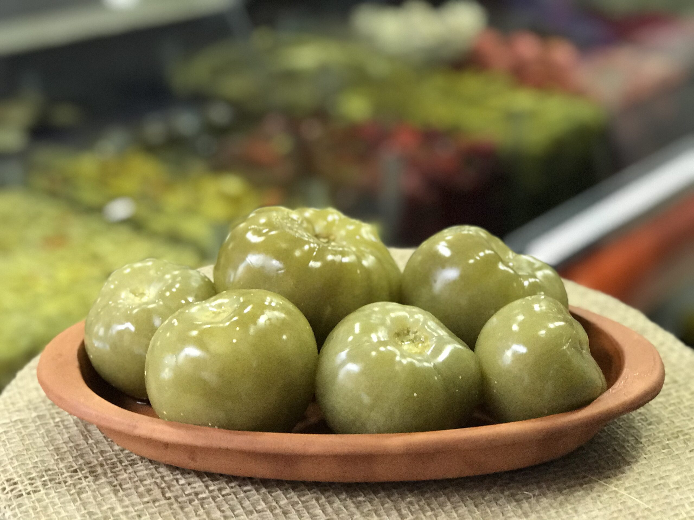
Taze domateslerin sirke, tuz, su ve çeşitli baharatlar kullanılarak fermente edilerek yapılan bir turşu türüdür.
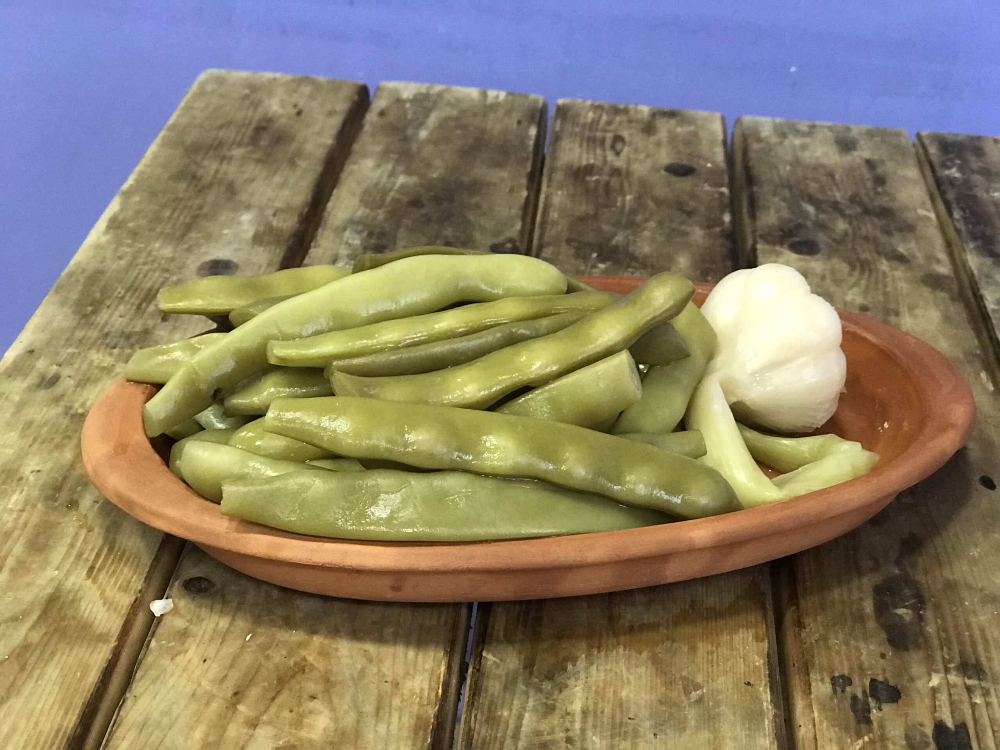
Taze fasulyelerin sirke, tuz, su ve baharatlar kullanılarak fermente edilmesiyle yapılan bir turşu türüdür.
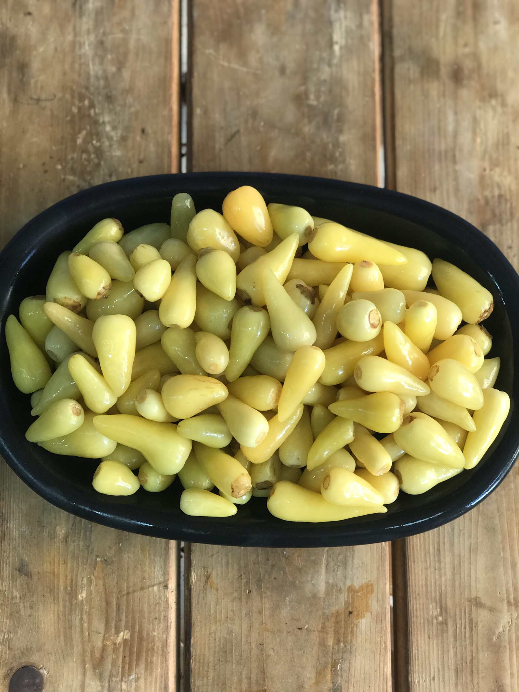
Biberiye turşusu, biberiye bitkisinin dallarının sirke, su, tuz ve bazen baharatlar kullanılarak fermente edilmesiyle yapılan bir turşu çeşididir. Biberiye, güçlü bir aromaya sahip bir bitki olduğu için turşu içerisinde benzersiz bir lezzet katmaktadır.
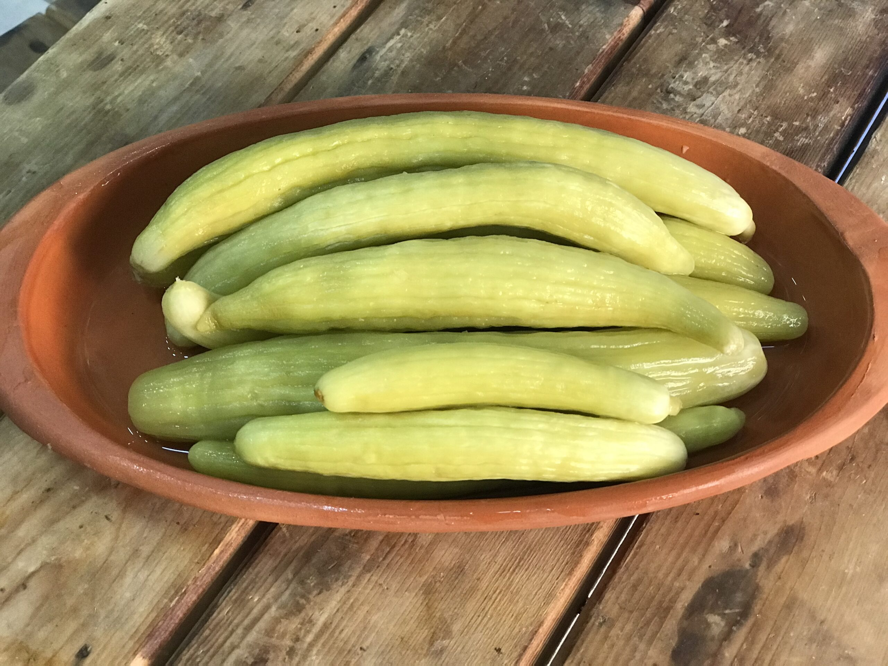
Acur turşusu, acurların (yer elması) sirke, su, tuz ve baharatlar kullanılarak fermente edilmesiyle hazırlanan bir turşu çeşididir. Acur turşusu, özellikle fermente olma sürecinden dolayı zengin bir lezzet profiline sahiptir.
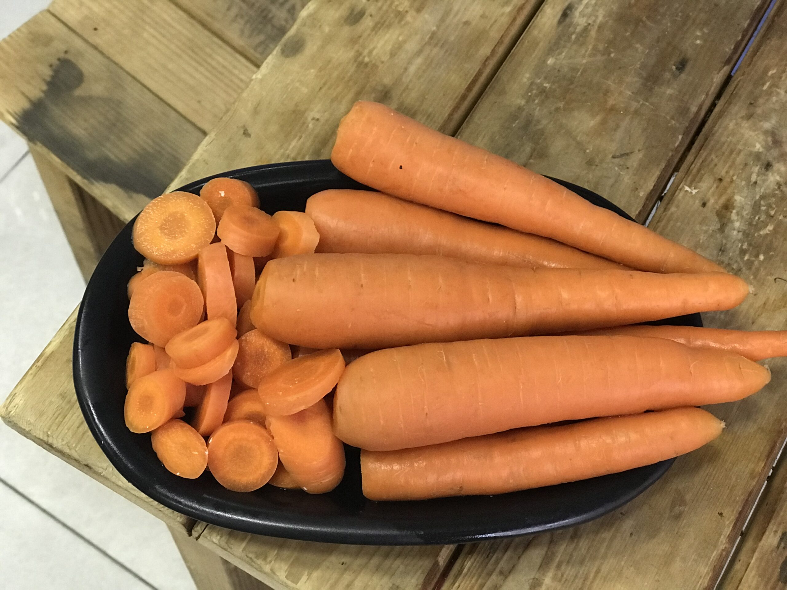
Havuç turşusu, havuçların sirke, su, tuz ve baharatlar kullanılarak fermente edilmesiyle hazırlanan lezzetli bir turşu çeşididir. Havuç turşusu, özellikle salatalarda, sandviçlerde veya yan yemek olarak kullanılarak renkli ve sağlıklı bir garnitür oluşturabilir.
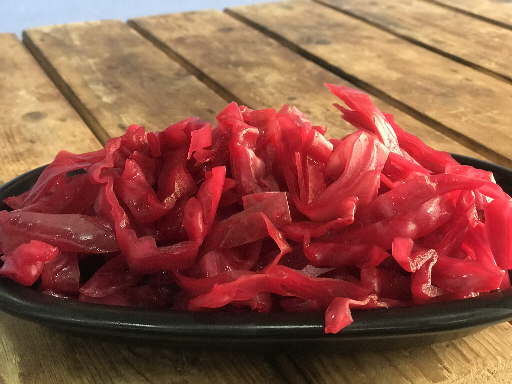
Mor lahana turşusu, mor lahananın sirke, su, tuz ve baharatlar kullanılarak fermente edilmesiyle yapılan lezzetli bir turşu çeşididir. Mor lahana turşusu, renkli ve sağlıklı bir garnitür olarak kullanılabilir.
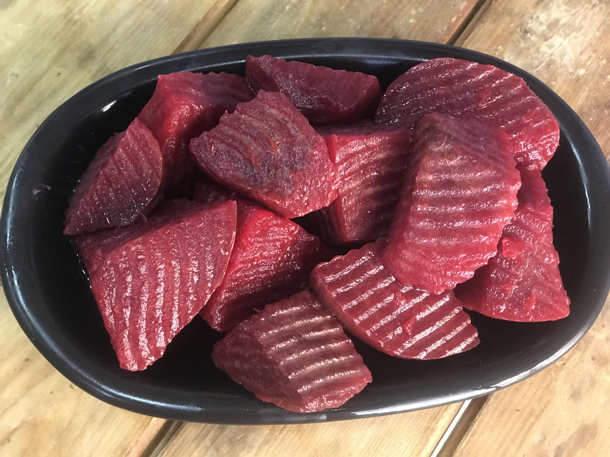
Pancar turşusu, pancarların sirke, su, tuz ve bazen baharatlar kullanılarak fermente edilmesiyle yapılan bir turşu türüdür. Pancar turşusu, kırmızı veya sarı pancarların doğal rengini ve özel lezzetini korur.
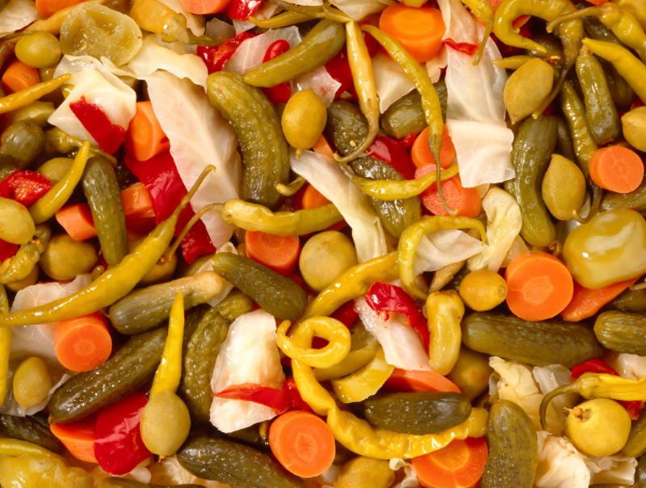
Karışık turşu, farklı sebzelerin ve bazen baharatların bir araya getirilerek hazırlanan fermente edilmiş bir turşu çeşididir. Karışık turşu, farklı renklerde ve tatlarda sebzelerin birleşimiyle zengin bir lezzet profiline sahiptir.
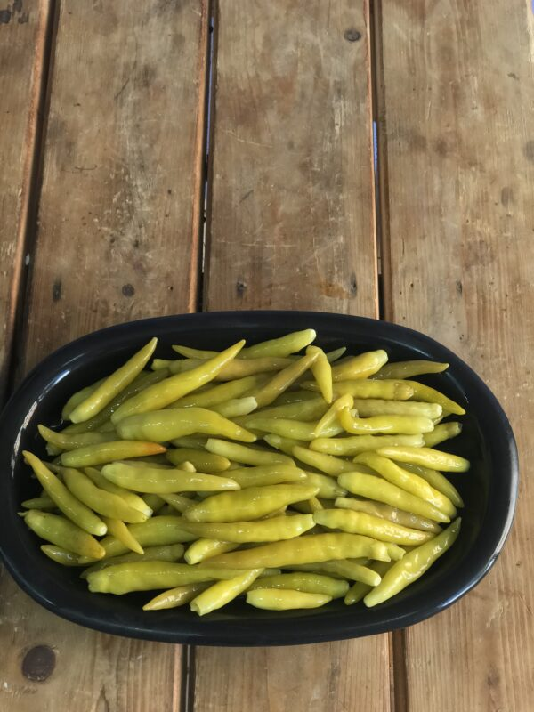
Süs biberi turşusu, genellikle renkli ve dekoratif süs biberlerinin sirke, su, tuz ve baharatlar kullanılarak fermente edilmesiyle yapılan bir turşu türüdür. Bu turşu, süs biberlerinin özel lezzetini ve renkli görünümünü korurken, fermente süreç sayesinde kendine özgü bir tat profiline sahip olabilir
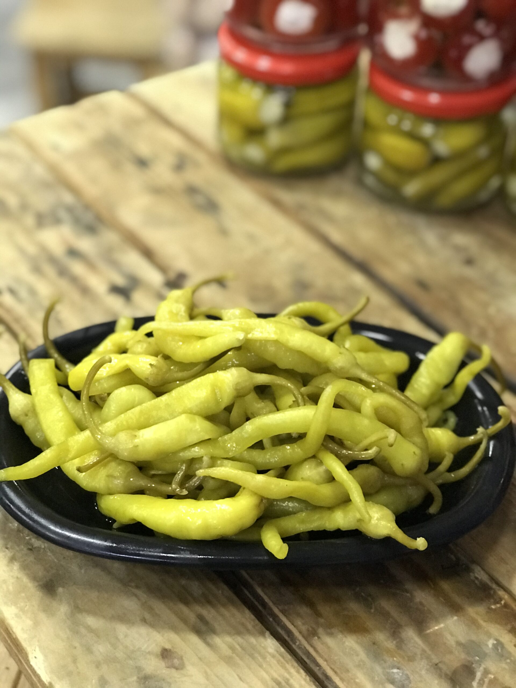
"Tatlı Çiçek Biberi" , genellikle "Sweet Baby Bell Peppers" veya "Mini Sweet Peppers" olarak da bilinen küçük, renkli ve genellikle tatlı biberleri ifade eder. Bu biberler genellikle renkli, küçük boyutlu ve tatlı bir lezzete sahiptir.
Bina yapı tarzını seçiniz
Konutun Durumunu Seçiniz
Binanızın Nizamını Seçiniz
Bina Kat Sayısını Giriniz
Konutun Çatısını Seçiniz
Asansör Durumunu Seçiniz
Konut Metrekaresini Giriniz
m2